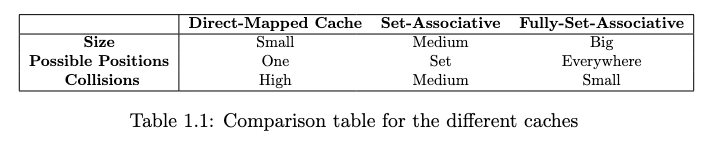
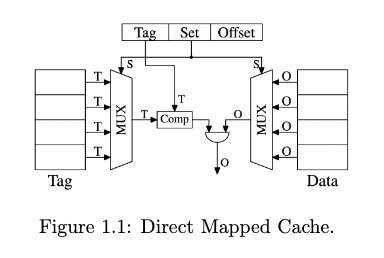
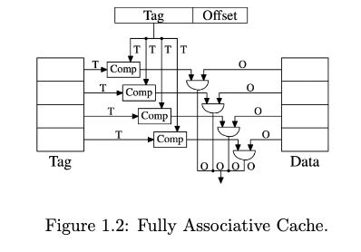
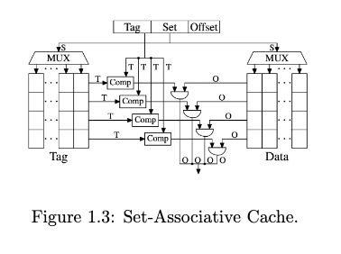
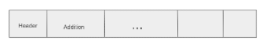
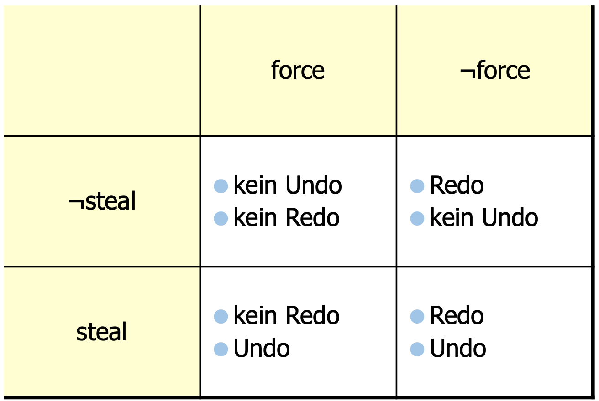

Dictionary
This is a Dictionary defining the most common used Terms in computer science. We wanted to save all of them in one document such that one can search faster for the needed information without managing 20ish tabs.
1. Memory
1.1 Primary Storage
RAM
Random access memory which is mostly used for implementing main memory
offers a grid storage where each item can be accessed in a random fashion
without decreasing performance (almost). Accesing a whole line is faster than accessing
single items in the grid. When switching between lines a signal is triggered which
induces extra runtime.
ROM
Read only memory is mostly used for storing the operating
system which lets the user start the computer, but not overwriting
the heart of his computer. There are types of ROM which cannot be erased
(mask ROM integrated circuit) and types which can be erased (EPROM and EEPROM).
NUMA
Non-uniform Memory Access is a type of memory-architecture, where
each core got its own Memory. Accessing neighbouring memories introduces
so called hops. Each additional needed hop adds extra latency.
DIMM
On the chip our RAM is placed in a dual-inline memory module.
EEPROM
Electrically Erasable Programmable Read-Only Memory often
stores the operating system. To fasten up the start-up process
the operating system is often still loaded into main memory.
1.2 Caches
This sub chapter is mostly based on the paper what every programmer
should know about memory so in case you want to get a deeper
understanding of the presented topics please investigate it. [1]
The images in this chapter are also all from this paper,
so we don't claim any of these given images to be ours.
TLB
keywords: SRAM, virtual memory
A translation look-aside buffer is a small SRAM fully associative cache
that is mostly used to translate virtual memory addresses to actual
physical addresses. The TLB can be accessed parallel and normally
doesn’t contain more than 1024 entries.

DIRECT-MAPPED CACHE
keywords: simple, high conflict rate
stores each cache line at exact one position. The direct-mapped cache A direct-mapped cache splits the Tag and Data into two separate sets. They can be accessed using the Set bit working with a Multiplexer. Only a single comparator is used because every cache line can only be used by similar addresses. The multiplexer, which is here the growing part, is relatively cheap it only needs O(log N) number of transistors as it becomes bigger. The drawback of this method is, that if the addresses are not evenly distributed a high conflict rate will be seen because some cache lines will be heavily used while others will only get a small amount of data.

FULLY ASSOCIATIVE CACHE
keywords: complex, low conflict rate
When using this cache architecture every address can be saved at every location in the cache. The tag bits are all compared in parallel using comparators. This fact is also the downside of this architecture because when increasing the cache size a new comparator is needed. These comparators are expensive register-wise.

SET-ASSOCIATIVE CACHE
keywords: hybrid
The set-associative cache combines the best of two worlds. It is a mixture of the direct-mapped cache and the fully set associative cache. So every cache line can be stored in a set of cache lines. First, the Tag and Data storage are divided into separate sets like the direct-mapped cache. To extend the direct-mapped cache multiple values can be accessed via the same set value. Second, the Tag bits are all compared in parallel which is like the fully associative cache. When the cache size grows only the number of columns grows. When the associativity grows it becomes expensive because now the number of comparators grows which are expensive (needing large amounts of transistors).

1.3 Secondary Storage
OPTANE
3D-Xpoint was invented by intel and micron technology. It offers lower latency and endures more write operations than traditional NAND-flash. Instead of working with different electrical voltage niveous it depends on varying different resistance levels. They need fewer transistors than NAND-flash, so the integration-density is higher than for NAND-flash. Even though they offer all these advantages in comparison to NAND-flash they were discontinued in 2022.
FIELD-EFFECT-TRANSISTOR
keywords: MOSFET, single
OVER-PROVISIONING
keywords: SSD, cache
When using over-provisioning for your SSDs a part of your SSD will be free and used like a cache for operations like garbage collection or wear leveling. Garbage collection is the process where old or invalid data will be erased. But due to the internals of an SSD only whole blocks can be erased. This means if a block has still contains a page with valid and used data this data has to be written somewhere else until the block can be erased. So, when we have a write intensive workload it can happen that the garbage collection process has no block where it can write the valid data to and it becomes complex to find a suitable block. In contrast when we over-provisioned the SSD, we have free blocks all the time where we can temporarily safe such valid blocks while we erase pages. The same argument helps us for wear-leveling where we also need to erase some blocks to make sure the use of the cells is uniformly distributed. For more information: [2]
1.4 SSD
This sub chapter is mostly based on the book "inside SSD" so if you need more
specific information about the topics, please look them up in the book.
NAND FLASH
Today most SSDs are implemented using NAND Flash which can usually store 1 bit per cell. NAND Flashs is connected to NAND Words which can be accessed by one transistor up front and one at the end. A logical page is the smallest accessible unit for reading and writing and a block is the smallest unit to be erasable. One block consists e.g. of 64 Pages.
Memory Controller
A memory controller is also implemented on the SSD and like the name says controls how the memory is working. It has two main purposes. First it needs to provide the most suitable interface and protocol towards the host and the flash memory. Second it must handle data, maximize transfer speed, data integrity and information retention. Usually, an 8–16-bit processor is used to implement this.
Wear Leveling
Wear leveling is a mechanism to distribute the use of pages fairly over the whole SSD so that not some pages have a tremendous higher amount of reading and writing cycles on them. If the same logical sector is written the wear leveling mechanism still maps a different underlying physical sector so that we have a fair amount of write cycles per sector leading the SSD to a longer lifetime. This is needed because the life-cycle of an SSD relatively short.
Garbage Collection
Keywords: random write
When the number of free sectors falls below a certain level garbage collection is used to compact and erase blocks. Garbage collection is expensive performance wise and should be performed in the background. Especially a big drop in performance occurs when we run random writes on near-fully SSDs. Because then we often have to use garbage collection to erase the full blocks.
PCIe
Peripheral Component Interconnect Express is a new standard to access either graphic cards or secondary storage on the mainframe. PCIe is highly parallelizable by offering lane access with up to 16 lines. Each line consists of two directions One sub-line where the data is sent and one sub-line where the data is received. At the end the data can still only be send serial over the cable. PCIe is hot-plug capable. [3]
CXL
Compute Express Link is a new standard protocol which enables the access of main memory over PCIe. It degrades performance but is especially useful for memory-centric designs, can reduce the carbonic footprint and can increase the longetivity of DRAM. To learn more about CXL you can look at this blog post: CXL.
SLC
A single level cell can store 1 bit and is used in NAND flash arrays.
MLC
A multi-level cell can how the name suggests store multiple bits precisely it can store 2 bits.
SATA
Sata devices are a type of old-fashioned SSDs compared to SAS it is the cheaper version. It uses the ATA (attachment) command set.
SAS
Sas drivers are fast and offer more features than SATA SSDs. Additionally, it supports link aggregation – wide porting. Link aggregation combines multiple physical cables into a single logical cable to increase bandwidth and provide redundancy and increase fault tolerance. Wide porting is a similar concept but is more focused on high-performance computing.
NVMe
Non-volatile memory express is a scalable interface protocol to access PCIe SSDs with a standardized protocol. Especially offering way more queues than old protocols like SAS or SATA makes it possible to exploit the full performance increase made by PCIe.
Workload Types (random, sequential)
There exists two types of patterns with whom you can access SSDs. You can access it in an random manner. But especially random writes have a big performance problem when the SSD gets full due to garbage collection. [4] Even though SSD should be able to perform logically random and sequential access with the same performance the hardware is still assymetric[5]. Especially loading full sequential blocks with needing less signals then accessing random pages improves the sequential workload performance.
2. Languages
CPP
CPP is a high/low-level language which still offers manually handling memory access via allocate functions. CPP also offers object-oriented programming features and is nowadays one of the fastest languages to use due to its near to hardware and memory programming.
JAVA
Java is a programming language which is famous for its garbage collector which distinct it from CPP and other more low-level languages where memory can/must be handled manually. Additionally, Java is Object-oriented and to run JAVA it will run in a sandbox which adds additional security features. Java uses UTF-16 for encoding characters and offers built in String datatype.
PYTHON
Python is the language mostly used for AI/ML programming because it offers good libraries like numpy, pandas, pytorch, etc. which all are widely used in the field. It is a really high-level language and has its advantages in scientific computing but is really slow compared to JAVA and CPP. Python is mostly built up on underlying CPP code.
SQL
The structured query language is a declarative programming language to get information out of a database system. The also called sequel language was developed for simplicity and to give access to databases to people without proper informatics background.
3. Databases
This chapter focuses on the basics of databases and the main algorithms and methods used implementing the standard databases.
DATAPLANE
keywords: data flow, road
Dataplane is a term mostly used in computer networks. It is the place where the actual flow of the data happens and where the data is processed. It mostly operates on layer 2 and layer 3 of the OSI model. In contrast, the control plane is the part where the decisions will be made e.g. where the data will go. A real-world example would be switching, and routing.
GRAPH DATABASE
Keywords: Neo4J, NoSQL
Graph databases are mostly used for complex queries that would Need complex join structures in Relations databases. The Main Concept is each entity is a Mode and the edges are the relationship between these nodes. Graph databases can be seen as structure-less and expanding them to a new structure is straight-forward while being highly Complex in relational databases.
ACID
Atomicity (all or nothing), Consistency (everywhere the same), Isolation (there are no other users) and Durability (I can use the system anytime).
Access Path
Struct
In c/cpp simply the ordering of the needed bits.

PADDING
Fill up the struct with bits to match a certain restriction. Normally implemented as zero-padding just fill up with 0‘s.
INDEXES
Data structure is mostly implemented as a search tree, which only represents the key values and offers a more efficient search for the underlying tuples.
RELATIONS
How data has a connection to other data. A sample relation would be having all professors in one table.
FREE SPACE MANAGEMENT
Free space management is a mechanism which tries to maximize the available space by using techniques like compression. There are multiple ways to implement it. We can just safe 2 bits to define how full a given page is and store it in the dictionary.
VOLCANO-STYLE-ITERATION
Query processing is implemented in a pipeline manner. Tuples will be sent through different stages where a different relational operator is applied. Based on the fundamental principle of data flow.
VECTOR-AT-A-TIME
Process multiple vectors at a time instead of a single tuple. This offers SIMD instructions and other possible optimizations.
MATERALIZATION-VIEW
Process whole columns at a time but this has the problem that you have more complex query plans than in other times.
SHADOW PAGING
keywords: dbms, old
Shadow paging refers to the process where for each page that will be changed a new copy is stored where the actual change will take place. This offers the possibility to always have the clean page on the disk and only the dirty page is stored as a copy. This process is for example used when including mmap in your database to offer transactional safety. [6] The drawbacks of this method are that you need additional memory space due to having an additional copy. Another drawback is that your memory is not contiguous anymore which slows sequential access. For example, if first your page order was [1,2,3,4] and you write to page 3 with a copy at page 8. After the process the page ordering will look like this: [1,2,8,4]. This was especially for HDDs a big drawback but since random access should be as fast as sequential access for SSDs now maybe shadow copying can come back in trend.
DELTA FILES
keywords: shadow paging
Delta files have the same approach as shadow paging but instead of interacting on the whole memory for all files like in shadow paging. Delta files use a separate memory space to either store the clean or the dirty copies. The main advantage overshadow paging is that it works through the separate memory space after the principles of locality. Another advantage is that having these separate spaces does not mix dirty and clean pages. But like every method, these files have several drawbacks. First, the number of I/O increases. When you abort/commit changes it becomes more expensive. Lastly, keeping track of these delta pages is non-trivial.
SEGMENT
keywords: composition
A segment is a combination of more than one page. Segments are used since having page granularity is in most cases only useful for I/O operations. So, in other cases for example indexes, relations, and free space management conclude multiple pages. Segments are implemented using virtual addresses to access these blocks of pages. There are many types of segments. Private vs. Public, Temporary vs. Permanent, Automatic vs. Manual, and with recovery vs. without recovery.
STATIC FILE MAPPING
keywords: simple, complex resizing
When using static file mapping all pages are stored in a big catalogue. The catalog is simply just a pointer that goes through the whole catalog and looks for the given page. The big problem when using this approach is that the resizing will be very difficult because the memory is not contiguous anymore and some pages may need to be reordered or placed at another place.
DYNAMIC EXTENT-MAPPING
keywords: flexible, administrative overhead
When using dynamic extent mapping the pages are not accessed directly, they are more accessed using a higher abstraction layer the catalog only points then to the first element of the given segment. This offers simpler resizing because the pointer can point to non-contiguous memory. Often the pages are accessed via a 2N pattern so that the not arbitrarily large number of addresses can be stored.
DYNAMIC BLOCK-MAPPING
keywords: growth handling, overhead
The dynamic block mapping approach maps every block to a pointer in the catalog which lets the catalog grow indefinitely. Also, the actual blocks can lay anywhere on the physical layer and can still be accessed.
3.2 Replacement Strategies
2Q
keywords: mix, FIFO, LRU
The two-queue approach uses how the name states two queues to maintain pages. One queue is implemented as a FIFO. The other queue is implemented as a LRU queue. It is a simple algorithm to solve the problem of having many pages that are referenced only once but still do not have the drawback of not working after the locality principle. First, all pages are stored in the FIFO. When a page is referenced, it will be put in the LRU. This leads to the fact that cold pages are stored in the FIFO and hot pages are stored in the LRU.
LFU
keywords: expensive, good idea
Least frequently used keeps the amount of how much each page was accessed in mind and evicts the one with the lowest number. The drawbacks of this method are that in practice it was too expensive to use. Because for every page the amount must be stored and also all these values have to be compared.
FIFO
keywords: simple, no locality
First in first out, the most common and simplest algorithm of them all. This method can be implemented using a single linked list, where the new entry will add at the tail and the head will be removed. The drawback of this method is that locality is not included because, after the locality principle, some pages will be accessed more frequently than others, and pages that are loaded into the buffer normally should stay there for a longer time.
SECOND CHANCE/CLOCK
keywords: complex, fast
The second change is like the last recently used strategy. You can implement this method by using a circular buffer queue and a pointer. The pointer simply goes through the queue and checks each element for its reference bit. If the bit equals 1 the bit will be flipped, and the pointer will go to the next queue entry. If the bit is set to zero, the page will be evicted and a new page will be loaded into this entry. When a page is accessed the second chance bit is set to 1.
LRU
keywords: replacement, simple, fast
Least recently used is a replacement strategy used in several areas of computer science. For example, it is used as a replacement strategy for the caches on the chip but also for buffer managers implemented in main memory. As the name states the line that was not used for the longest amount of time.
NLRU
keywords: simple, fast, single bit
The strategy not most recently used is also a simple mechanism to implement a fast replacement strategy. The most recently used line can be indicated by using a single bit. So the logic only needs to look at that single bit and can directly evict another line.
Locking
SPIN LOCK
keywords: loading
When using a spin lock, when we see that the attribute we wanted to access is locked we start a so-called spin and try to lock until the locked attributes gets unlocked.
Recovery
Force and Steal

Testing
Zipf
Zipf is a distribution where each number of occurences of an element depends on its rank. The Object with the lowest rank will appear the most. The zipf factor defines how fast the number of occurences will drop between the ranks. A higher number means faster drop, which means that the element with rank n-1 (n > 1) will occur way more often than the element with rank n.
4. Artificial Languages
Model Parameters
These are the parameters which we learn on the training set and define there. In supervised learning we optimize them against the loss-function.
Hyperparameter
Hyperparameter are the parameters which classify which model we use they are not trained on the test data only validated on the validation data. If we want to change our hyperparameter we have to completely retrain our model on the given training set.
References
- [1] Ulrich Drepper. What every programmer should know about memory. https://people.freebsd.org/~lstewart/articles/cpumemory.pdf, 2024.
- [2] Samsung. Over provisioning for samsung data center ssd. 03 2019.
- [3] Pcie architecture. https://www.youtube.com/watch?v=caiREMKP0-E&list=PLZe4P0P_9Cosd0i2ha_QRdWlR1iZ0yVG4, 2024.
- [4] lies, damn lies and ssd benchmarks. https://web.archive.org/web/
20170413223914/http://www.seagate.com/nl/nl/tech-insights/
lies-damn-lies-and-ssd-benchmark-master-ti/, 2024
- [5] ack. is sequential io dead? https://jack-vanlightly.com/blog/2023/
5/9/is-sequential-io-dead-in-the-era-of-the-nvme-drive, 2024.
- [6] Andrew Crotty, Viktor Leis, and Andrew Pavlo. Are you sure you want to
use mmap in your database management system? In CIDR 2022, Confer-
ence on Innovative Data Systems Research, 2022.